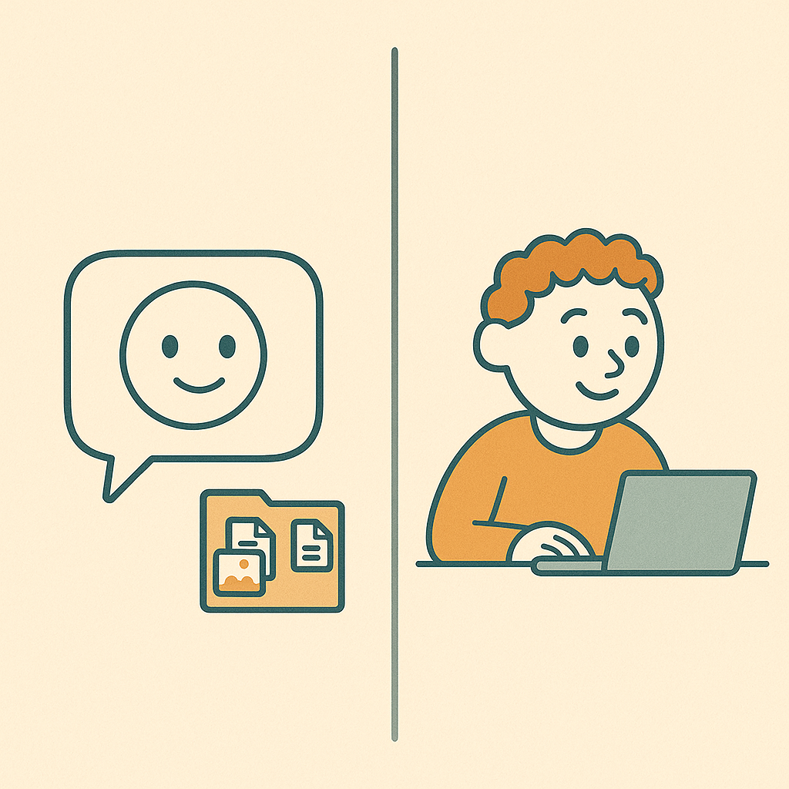
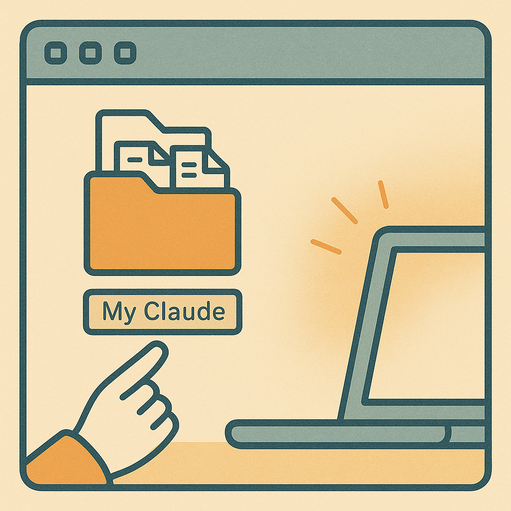

🎯 ¿Qué es Claude Cowork?

Probablemente ya usaste un chatbot antes. ChatGPT, el Claude normal en tu navegador. Te acercas, haces una pregunta, obtienes una respuesta, cierras la pestaña. Útil. Pero limitado. Es como detener a un extraño conocedor en la calle — inteligente, servicial, desaparecido en el momento en que te alejas.
Cowork es diferente. Cowork es un pasante en el escritorio junto al tuyo. Le das a ese pasante una carpeta; ellos leen todo lo que hay en ella. Les das una tarea; trabajan en ella en múltiples pasos. Vuelves mañana; te recuerdan. El mismo cerebro que el chatbot Claude. Configuración completamente diferente.
Las tres pestañas. Cuando abras la aplicación de escritorio de Claude, verás tres en la parte superior:
- Chat — el extraño conocedor. Preguntas rápidas, sin memoria.
- Cowork — el pasante con tu carpeta. Lo que vamos a configurar hoy.
- Code — para desarrolladores de software. Ignórala por ahora.
Al final de las próximas cuatro secciones tendrás:
- Claude instalado con acceso a una carpeta que tú controlas
- Un asistente que te recuerda entre conversaciones
- Un chequeo diario a las 9am para crear el hábito
🔌 Instala Claude Cowork
Cuatro pasos. Hazlos en orden — el orden importa.
1Suscríbete a Claude primero
Ve a claude.ai/upgrade y suscríbete a Claude Pro antes de descargar la aplicación de escritorio. Hay un bug donde Cowork no aparece si descargas primero y te suscribes después — puede tomar un tiempo resolverlo. Ahórrate el dolor de cabeza: suscríbete primero.
2Actualiza tu sistema operativo
Mac: Menú Apple → Configuración del Sistema → General → Actualización de Software.
Windows: Inicio → Configuración → Windows Update.
Ejecuta todas las actualizaciones disponibles. Reinicia si te lo pide. Cowork necesita un sistema operativo reciente.
3Descarga Claude Desktop
Ve a claude.ai/download e instala como cualquier aplicación normal — arrastra a Aplicaciones en Mac, o ejecuta el instalador en Windows. Inicia sesión con la cuenta que acabas de suscribir.
4Confirma que las tres pestañas aparecen
En la parte superior de la ventana de Claude Desktop, deberías ver tres pestañas una al lado de la otra: Chat, Cowork y Code. Esa es la señal de éxito — debería verse exactamente así:
Si solo ves una o dos pestañas, tu suscripción Pro aún no se ha propagado. Espera 5-10 minutos, cierra sesión y vuelve a entrar, reinicia la aplicación. Si todavía falta después de 20 minutos, verifica que tu suscripción se haya procesado en claude.ai.
📁 Asigna Tu Carpeta

Este es el paso más importante del curso. Lo que hace que Cowork sea realmente Cowork en lugar de solo otro chatbot.
¿Por qué una carpeta? Los asistentes de chat te olvidan en el momento en que cierras la ventana. Cowork recuerda — pero solo porque puede leer y escribir archivos en una carpeta en tu computadora a la que le das acceso. La memoria de tu asistente vive en tu disco duro, en archivos de texto plano que puedes abrir en Word o leer en tu teléfono.
Cómo asignar una:
- En la pestaña Cowork, busca Settings (ícono de engranaje, o bajo un menú en la esquina).
- Encuentra la opción llamada Workspace folder (a veces "Working folder" o simplemente "Folder").
- Haz clic en ella. Obtendrás un selector de carpetas normal de Mac o Windows.
- Recomendado: No elijas una carpeta existente llena de documentos de trabajo. Crea una carpeta nueva en tu Escritorio llamada
Mi Claude. Fácil de encontrar, no se mezcla con nada más.
Confirma que funcionó. Arrastra un documento de Word o archivo de texto a la carpeta que acabas de elegir. Luego ve a Cowork y escribe:
Si Claude te lo lee de vuelta, estás conectado. Si no, verifica que la carpeta que elegiste sea realmente la que Cowork está usando.
🎤 Inicia Tu Cowork
Ahora pegas un mensaje en tu Cowork y se configura solo. Se nombra a sí mismo, te entrevista, guarda tu contexto, y programa un chequeo diario.
- Tu Cowork te dirá hola calurosamente y explicará la configuración (~15 min).
- Te preguntará cómo llamarlo — elige un nombre.
- Te hará algunas preguntas rápidas sobre cómo quieres que te hable.
- Te entrevistará sobre tu trabajo — una pregunta a la vez, ~10 minutos.
- Guardará lo que le dijiste en un archivo en tu carpeta para que te recuerde para siempre.
- Creará una lista de tareas inicial con algunas cosas reales para probar.
- Programará un chequeo diario a las 9am para ayudarte a terminar la lista de tareas una tarea a la vez.
Cada día de semana a las 9am después de eso, tu Cowork te pinga con una tarea abierta. Respondes "hecho," "todavía no," o "saltar." Ese es el ritmo.
Copia el mensaje de abajo y pégalo en tu Cowork. Envíalo. Luego sigue la guía de tu asistente.
Hola! Te estoy configurando como mi asistente de trabajo por primera vez. No soy particularmente técnico. Uso Word y Excel para la mayoría de las cosas. Por favor ve despacio, pregúntame una cosa a la vez, y usa lenguaje sencillo. Sin jerga.
Me gustaría que te configures guiándome a través de cuatro cosas hoy. Sabrás que terminamos cuando confirmes todas ellas.
PARTE A — Nombre y personalidad
Primero: pregúntame cómo quiero llamarte. Ese es tu nombre de ahora en adelante.
Luego hazme tres preguntas cortas, una a la vez:
1. ¿Debo hablarte formalmente o casualmente?
2. ¿En qué idioma debemos trabajar? (Español por defecto — o dime otro idioma si prefieres ese)
3. ¿Debo ser amigable y conversacional, o eficiente y breve?
Anota mis respuestas.
PARTE B — Entrevístame, una pregunta a la vez
1. ¿Cuál es tu nombre?
2. ¿A qué te dedicas? Dime en palabras simples.
3. ¿Cómo se ve una semana típica para ti?
4. ¿Qué herramientas usas día a día? (Word, Excel, Outlook, Gmail, Google Drive, cualquier otra cosa)
5. ¿Hay varios proyectos o clientes diferentes con los que trabajas, o principalmente una cosa?
6. ¿Qué tipo de tareas ocupan la mayor parte de tu tiempo?
7. ¿Cuál es la cosa más molesta o repetitiva en tu trabajo — lo que delegarías primero si pudieras?
8. ¿Hay algo más que deba saber sobre ti para ser útil?
PARTE C — Configura mis archivos
- Guarda mis respuestas de la Parte A y Parte B en un archivo llamado `about-me.md` en la parte superior de mi carpeta de trabajo. Usa encabezados claros. De ahora en adelante, cada vez que trabajemos juntos, lee ese archivo primero para que me recuerdes.
- Crea un archivo llamado `todo.md` en la parte superior de mi carpeta de trabajo con exactamente estas tareas iniciales:
# Mi Lista de Tareas
Cada ítem:
- [ ] **Título de la tarea** — qué es
- Estado: abierta
- Última vez preguntada: nunca
- Notas:
---
## Tareas iniciales (trabajaremos en estas juntos)
- [ ] **Muéstrame un pedazo real de tu trabajo** — Arrastra un documento, email, captura de pantalla, o nota a tu carpeta de trabajo y dime en qué necesitas ayuda. Esta es tu primera victoria real.
- Estado: abierta
- Última vez preguntada: nunca
- Notas:
- [ ] **Conecta tu email** — En configuración de Cowork → Connectors, inicia sesión con Outlook o Gmail. Esto me permite leer tu bandeja de entrada para ayudar con respuestas.
- Estado: abierta
- Última vez preguntada: nunca
- Notas:
- [ ] **Háblame de una tarea recurrente específica** — Elige una cosa que hagas cada semana y recórremela. Veré si puedo hacerla más rápida.
- Estado: abierta
- Última vez preguntada: nunca
- Notas:
- [ ] **Agrega una segunda carpeta de proyecto, si tienes múltiples proyectos/clientes** — Dime que quieres agregar otra, y crearé la estructura de carpetas contigo.
- Estado: abierta
- Última vez preguntada: nunca
- Notas:
PARTE D — Programa el chequeo diario
Crea una tarea programada que se ejecute cada día de semana a las 9:00am en mi zona horaria local con este mensaje:
---INICIO DE MENSAJE PROGRAMADO---
Buenos días. Lee primero `about-me.md` y `todo.md`.
Encuentra la tarea MÁS ANTIGUA con estado "abierta". Solo una. Ignora el resto.
Salúdame calurosamente en una oración corta usando mi nombre. Luego pregúntame sobre esa una tarea en lenguaje sencillo. Algo como:
"¡Buenos días! La tarea abierta de hoy sigue siendo: [título de la tarea]. ¿Dónde estás con ella — hecha, todavía no, o quieres saltarla?"
Espera mi respuesta. Luego:
- Si digo "hecho" o algo que confirme la finalización → márcala [x], cambia el estado a "hecha", anota la fecha de hoy, escribe una frase cálida de una línea, y dime qué sigue en la lista (solo vista previa — no preguntes sobre ella todavía).
- Si digo "todavía no" o describo un bloqueo → mantenla abierta, actualiza "Última vez preguntada" a hoy, guarda cualquier nota en "Notas:". Pregunta si quiero hacerla AHORA MISMO con tu ayuda. Si sí, guíame a través de ella. Si no, di "ok, entonces mañana" y termina.
- Si digo "saltar" o "no es relevante" → cambia el estado a "saltada", anota la fecha, pregunta brevemente por qué (una pregunta corta), guarda mi respuesta en Notas. No discutas.
- Si mi respuesta es vaga, haz UNA pregunta de aclaración. No acumules.
Tono: cálido, breve, al mismo nivel. Como un amigo tranquilo que sabe que soy capaz.
Termina cada chequeo guardando el `todo.md` actualizado. Así es como el chequeo de mañana sabe dónde estamos.
---FIN DE MENSAJE PROGRAMADO---
Después de que las cuatro partes estén hechas, confirma en voz alta:
1. El nombre que elegí para ti
2. Las tres configuraciones de personalidad
3. Que `about-me.md` y `todo.md` existen en mi carpeta
4. Que el chequeo diario de 9am está programado
Luego di: "Estamos listos. Tu primera tarea real está en tu lista de tareas — arrastra algo en lo que estés trabajando a la carpeta y dime qué necesitas. Estaré aquí. Y te veré mañana a las 9 para nuestro primer chequeo."
Comienza ahora con la Parte A — pregúntame cómo quieres que te llame.
Ya estás configurado. Los próximos seis capítulos te enseñan cómo realmente usar tu asistente bien — cómo recuerda, cómo hablarle, qué puede hacer, qué no puede, y cómo hacer que se mantenga. Lee a tu propio ritmo.
🧠 Cómo Recuerda
Aquí está la cosa más extraña sobre tu nuevo asistente: tiene memoria perfecta dentro de una sola conversación, y memoria de pez dorado entre ellas. Cierra el chat, abre uno nuevo — se fue. No recuerda el ayer. No recuerda el artículo que mencionaste la semana pasada.
Lo sé. Suena mal. Hay una solución, y es elegante.
Tu carpeta es el archivador de tu asistente. Cualquier cosa que quieras que recuerde mañana, guárdala ahí hoy.
Ya viste esto en acción. El archivo about-me.md que hiciste durante la inicialización es el manual de incorporación del pasante — lo primero que leen cada mañana, para que sepan quién eres. El archivo todo.md mantiene tus tareas a través de los días. La carpeta lo contiene todo.
La regla: cualquier cosa importante, pídele a tu asistente que la guarde. ¿Un borrador que te gustó? Guárdalo. ¿Una idea útil? Guárdala. La conversación es solo donde hablas; la carpeta es la memoria.
- "Siempre lee mi archivo about-me antes de que empecemos a trabajar."
- "Guarda esto como un archivo para que lo tengamos la próxima vez."
- "Si olvidas algo que discutimos, revisa la carpeta primero."
Versión más pequeña de esto dentro de una sola conversación: si un chat se vuelve realmente largo — cientos de mensajes — tu asistente empieza a olvidar cosas de antes. Misma solución. Empieza un chat nuevo, déjalo releer la carpeta, vuelves a plena potencia.
Cambio mental: deja de preguntar "¿qué recuerda mi asistente?" Empieza a preguntar "¿qué hay en el archivador?" Esa es la respuesta.
🗣️ Habla con Tu Asistente
Este es el capítulo de mayor impacto del curso. Domina estos hábitos y tu asistente pasa de "aceptable" a genuinamente útil.
Aquí está el patrón en el que cae la mayoría de la gente. Abren el chat y ladran: "escríbeme un email sobre X." Envían. Obtienen algo mediocre. Culpan a la IA. Es como darle a un nuevo empleado una oración y esperar que lea tu mente.
La solución no es más conocimiento de IA. Son tres pequeños hábitos.
Hábito 1 — Informa antes de pedir. No empieces con la solicitud — empieza con la situación. Imagina informar a un freelancer competente que nunca conoció tu negocio. Malo: "escribe un pitch." Bueno: "Trabajo en una empresa de calificación crediticia. Acabamos de lanzar una encuesta sobre tendencias de crédito de pequeñas empresas. Necesito pitchear a periodistas de fintech. El tono debe sentirse noticioso, no promocional. Ahora redáctame un pitch." Misma tarea. Resultado dramáticamente mejor.
Hábito 2 — Haz que tu asistente te entreviste A TI primero. Contraintuitivo pero funciona hermosamente. Solo di: "Antes de que redactes algo, hazme tres preguntas para asegurarte de que entiendes." Responder sus preguntas obliga a ambos a anclar en lo que realmente importa. Lo que obtienes después de la entrevista es el doble de bueno que el resultado en frío.
Hábito 3 — Retrocede. Si un borrador se siente demasiado corporativo, dile: "Más corto. Menos formal. Apertura más contundente. Elimina el segundo párrafo." No se insulta. Solo lo rehace. Mientras más corrijas, más aprende tu voz. Trátalo como un junior que está ansioso por complacer, no como un oráculo sagrado.
Algunos otros movimientos que funcionan consistentemente:
- Pide dos opciones en lugar de una. Comparar es más fácil que juzgar.
- Dile que actúe como un rol específico. "Actúa como un editor y ajusta este párrafo."
- Dile cómo se ve lo bueno. "Un buen pitch es de menos de 120 palabras, tiene un número en el asunto, termina con una solicitud clara." Ahora tiene algo a lo que apuntar.
- Cuando clava algo — dile. "Ese es el tono correcto. Recuerda esta voz para trabajo futuro." La retroalimentación se acumula.
- "Antes de empezar, hazme tres preguntas para asegurarte de que entiendes."
- "Eso es demasiado corporativo. Rehazlo más corto."
- "Muéstrame dos opciones, no una."
- "Actúa como un [rol específico] y reescribe esto."
Si te llevas una línea de todo este curso: un mensaje afilado le gana a una IA inteligente. Tu trabajo es configurarlo bien.
🔗 Conectores
Un conector es un cable entre tu asistente y una aplicación que ya usas. Outlook, Gmail, Google Drive, Slack, tu calendario. Conéctalo una vez, y tu asistente puede alcanzar esa aplicación de la forma en que tú alcanzarías un archivador.
Para conectar uno: Configuración de Cowork → Connectors. Verás qué está disponible. Haz clic en iniciar sesión para la aplicación que quieras. Microsoft para Outlook. Google para Gmail, Drive, Calendar.
Predeterminado importante: la mayoría de los conectores empiezan en modo de solo lectura. Tu asistente puede ver tu bandeja de entrada pero no puede enviar nada por su cuenta. Los borradores van a tu carpeta. Tú envías manualmente. Piénsalo como dejar que tu pasante lea tu pila de emails pero sin dejar que envíen nada todavía. Una vez que confíes en ellos, puedes expandir los permisos.
Ejemplo real. Enviaste cinco pitches esta semana. Tres días después quieres saber quién respondió. Preguntas:
Tu asistente ejecuta la búsqueda, lista las respuestas, pregunta a cuál redactar una respuesta primero. Eliges. Redacta en tu carpeta. Pulis y envías.
Ese es el ciclo. Lee en la aplicación conectada. Redacta en tu carpeta. Envía manualmente. Limpio y seguro.
- "Busca en mi bandeja de entrada mensajes de [persona] en la última semana."
- "Redacta una respuesta a esto — guárdala en mi carpeta, no envíes."
- "¿A qué emails no he respondido todavía?"
No conectes todo el primer día. Cada conector agrega capacidad, pero también agrega superficie para que las cosas se desvíen. Agrega uno a la vez, cuando tengas una razón real. Empieza donde pasas la mayor parte de tu tiempo — para la mayoría de la gente, es el email.
✅ Confía, pero Verifica
Tu asistente tiene razón la mayor parte del tiempo. No siempre. A veces estará confiadamente equivocado sobre un hecho — una estadística, una fecha, el título de una persona, un detalle de contacto. No es común. Pero sucede.
La palabra técnica es "alucinación." La palabra práctica: confiado-pero-equivocado. Imagina el pasante ansioso que realmente quiere ser útil, y ocasionalmente inventa un pequeño detalle en lugar de admitir que no sabe. Misma energía. Misma solución.
Dos categorías para mantener en tu cabeza. Hechos que vinieron DE ti — tus archivos, tus notas, lo que escribiste en este chat — tu asistente los maneja bien. Están justo frente a él. Pero hechos que vienen de su propio conocimiento — una estadística que recuerda, una persona que afirma conocer — esos son borradores hasta que los hayas revisado.
El truco es hacer que tu asistente te diga cuál es cuál.
- "Para cada hecho en tu respuesta, dime de dónde vino — mis archivos, mis notas, o tu conocimiento general."
- "Marca cualquier cosa de la que no estés seguro. No lo suavices."
- "Si no sabes algo, di no sé en lugar de adivinar."
- "Dime de qué estás menos seguro en este borrador."
Esa última es la más importante. Un buen asistente dice "no sé." Uno débil lo finge. Puedes entrenar al tuyo hacia el primero solo pidiéndolo.
Un movimiento más que vale la pena conocer: "Dime de qué estás menos seguro en este borrador." Tu asistente literalmente señalará sus propios puntos débiles. Úsalo antes de enviar cualquier cosa importante.
Para cualquier hecho sobre el que actúes — un email de contacto, una cita que atribuirás, una fecha en un documento — verifícalo. Mismo instinto que ya usas cuando lees el borrador de un junior antes de que salga por la puerta. Nuevo junior. Mismo instinto.
🚫 Lo que No Puede Hacer
Una lista corta y honesta, para que puedas planear alrededor de ellos.
- No puede hacer llamadas telefónicas. La voz todavía es tu trabajo.
- No puede predecir el futuro. Puede redactar, analizar, sugerir — pero no puede decirte si un pitch funcionará, si una estrategia funcionará, si una persona dirá que sí. Esa es la parte incognoscible. Igual que cualquier junior — pueden preparar la presentación, no pueden hacer que el cliente compre.
- No puede reemplazar tu juicio. Él redacta; tú decides. De la misma forma en que un senior anula el trabajo de un junior, tú anulas el de tu asistente. Esa dinámica es normal, saludable, y la forma correcta de trabajar.
- No sabe eventos recientes. Su conocimiento tiene una fecha límite — dejó de leer las noticias en algún momento. Para cualquier cosa sensible al tiempo, verifica o pega la fuente más reciente.
- Puede estar equivocado sobre los hechos (ve el capítulo anterior). Verifica lo que importa.
El marco con el que partir: un gran asistente te hace más rápido. Los mejores también saben cuándo retroceder. El tuyo está tratando de ser del segundo tipo. Así que si alguna vez intenta hacer una llamada que realmente es tuya — retrocede. Haz que trabaje en las entradas, no en los veredictos. Esa es la división entre un pasante útil y uno presuntuoso.
- "Si realmente no puedes hacer esta tarea, dime — no la finjas."
- "Para cualquier cosa reciente, verifica antes de responder."
- "Esta es mi decisión. Solo dame las entradas."
☕ Creando el Hábito
La mayoría de las personas que prueban herramientas de IA renuncian en la segunda semana. No porque las herramientas sean malas — porque nunca crearon el hábito. Las herramientas se quedan ahí juntando polvo como una membresía de gimnasio en febrero. No seas esa persona.
Aquí está el ritmo diario que funciona.
Mañana, cinco minutos. Abre Cowork. Nombra tu proyecto, si tienes más de uno: "Estoy trabajando en este proyecto hoy." Pídele a tu asistente que te guíe a través del rastreador de ayer — qué se movió, qué queda. Establece las tres prioridades principales de hoy.
Fin del día, dos minutos. Registra qué pasó. Quién respondió. Qué se terminó. Qué se debe mañana.
Ese es todo el ritual. Cinco minutos entrando, dos minutos saliendo. El chequeo diario de 9am que configuraste antes iniciará el ritual matutino para ti. No te lo saltes.
Dos semanas de esto y algo cambia. Tu asistente deja de ser una herramienta que usas y se convierte en un colega con el que trabajas. Sabrás que está funcionando cuando sucedan dos cosas: primero, dejas de tener ese momento de "espera, ¿qué estaba haciendo otra vez?" en medio del día — el rastreador lo mantiene por ti. Segundo, dejas de pensar en ello como "IA" en absoluto. Solo le pides a tu asistente la cosa y sigues adelante.
Ese es el objetivo. El curso termina aquí. Tu trabajo comienza.